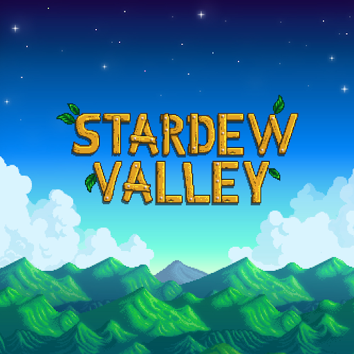

-

-

-


Forza Horizon 5
Forza Horizon 5 is a racing video game set in an open world environment based in a fictional representation of Mexico. The game has the largest map in the entire Forza Horizon series, being 50% larger than its predecessor, Forza Horizon 4, while also having the highest point in the Horizon series. The map was described by creative director Mike Brown as one of the most diverse Forza Horizon maps the team has built. Forza Horizon 5 is a 2021 racing video game developed by Playground Games and published by Xbox Game Studios. It is the fifth Forza Horizon title and twelfth main instalment in the Forza series. The game is set in a fictionalised representation of Mexico.
Dota 2
Dota 2 is a 2013 multiplayer online battle arena (MOBA) video game by Valve. The game is a sequel to Defense of the Ancients (DotA), a community-created mod for Blizzard Entertainment's Warcraft III: Reign of Chaos. Dota 2 is played in matches between two teams of five players, with each team occupying and defending their own separate base on the map. Each of the ten players independently controls a powerful character known as a "hero" that all have unique abilities and differing styles of play. A team wins by being the first to destroy the other team's "Ancient", a large structure located within their base.
Stardew Valley
Stardew Valley is a farm life simulation game developed by Eric "ConcernedApe" Barone. Players take the role of a character who inherits their deceased grandfather's dilapidated farm in a place known as Stardew Valley. The game was released for Windows in February 2016 before being ported to other platforms. Stardew Valley is open-ended, allowing players to grow crops, raise livestock, fish, cook, mine, forage, and socialize with the townspeople, including the ability to marry and have children. It allows up to four players to play online together.
The Elder Scrolls V: Skyrim
The Elder Scrolls V: Skyrim is an action role-playing video game developed by Bethesda Game Studios and published by Bethesda Softworks. Its main story focuses on the player's character, the Dragonborn, on their quest to defeat Alduin the World-Eater, a dragon who is prophesied to destroy the world. Over the course of the game, the player completes quests and develops the character by improving skills. The game continues the open world tradition of its predecessors by allowing the player to travel anywhere in the game world at any time, and to ignore or postpone the main storyline indefinitely.
Assetto Corsa
Assetto Corsa (Italian for "Race Setup") is a sim racing video game developed by the Italian video game developer Kunos Simulazioni. It is designed with an emphasis on a realistic racing experience with support for extensive customization and moddability. Assetto Corsa is a racing simulation that attempts to offer a realistic driving experience with a variety of road and race cars through detailed physics and tyre simulation on race tracks recreated through laser-scanning technology. It supports a range of peripherals like mouse, keyboard, wheels, gamepads, triple-displays, TrackIR head tracking and VR head-mounted displays as well as Nvidia 3D Vision and professional motion systems.
Fallout 4
Fallout 4 is a 2015 action role-playing game developed by Bethesda Game Studios and published by Bethesda Softworks.The game is set within an open world post-apocalyptic environment that encompasses the city of Boston and the surrounding Massachusetts region known as "The Commonwealth".The main story takes place in the year 2287, ten years after the events of Fallout 3 and 210 years after "The Great War", which caused catastrophic nuclear devastation across the United States. The player assumes control of a character referred to as the "Sole Survivor", who emerges from a long-term cryogenic stasis in Vault 111, an underground nuclear fallout shelter.
Sekiro: Shadows Die Twice
Sekiro: Shadows Die Twice is an action-adventure game played from a third-person view. Compared to FromSoftware's Dark Souls series, the game features fewer role-playing elements, lacks character creation and the ability to level up a variety of stats, and has no multiplayer elements. It does, however, include gear upgrading, a skill tree, and limited ability customization. Rather than attacking to whittle an enemy's health points, combat in Sekiro revolves around using a katana to attack their posture and balance instead, as well as deflecting incoming enemy attacks, eventually leading to an opening that allows for a single killing blow.